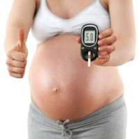

Diabetes
Type 1 Diabetes
With type 1 diabetes, the body’s immune system attacks part of its own pancreas.The immune system mistakenly sees the insulin-producing cells in the pancreas as foreign, and destroys them. This attack is known as "autoimmune" disease.These cells called islets are the ones that sense glucose in the blood and, in response, produce the necessary amount of insulin to normalize blood sugars.Insulin serves as a key to open your cells, to allow the glucose to enter and allow you to use the glucose for energy. Without insulin, there is no key, so the sugars stay and builds up in the blood. The results to the body’s cells starve from the lack of glucose. If left untreated, the high level of “blood sugar” can damage eyes, kidneys, nerves, heart, and can also lead to coma and death.
Type 2 Diabetes
The most common form of diabetes is called type 2, or non-insulin dependent diabetes.This is also called adult onset diabetes, since it typically develops after age 35. However, a growing number of younger people are now developing type 2 diabetes. People with type 2 are able to produce some of their own insulin. Often, it’s not enough. Sometomes the insulin will try to serve as the key to open the body’s cells, to allow the glucose to enter. But the key won’t work, the cells won’t open, this is called insulin resistance. Type 2 is often tied to people who are overweight, with a sedentary lifestyle, treatment focuses on diet and exercise. If blood sugar levels are still high, oral medications are used to help the body use its own insulin more efficiently. In some cases, insulin injections are necessary.
Gestational diabetes
It is a condition in which a woman without diabetes develops high blood sugar levels during pregnancy, the placenta supports the baby as it grows as the hormones from the placenta help the baby develop. when that happens these hormones also block the action of the mother's insulin in her body, which is a problem for the mother, it is called insulin resistance. isulin resistance makes it hard for the mother's body to use insulin, so she may need up to three times as much insulin.